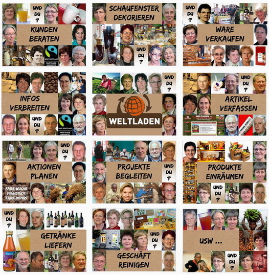

Weltladen Eupen, Eynatten und Weywertz suchen Verstärkung!
Einsatzmöglichkeiten
- Kunden beraten
- Schaufenster dekorieren
- Informationen verbreiten
- Getränke liefern
- Projekte begleiten
- Aktionen planen
- ...
Kontaktfreudige Personen die eine oder auch mehrere dieser Aufgaben in einem Weltladen (in Eupen, Eynatten oder Weywertz) übernehmen möchten, können sich gerne im Sekretariat in Eupen melden.
